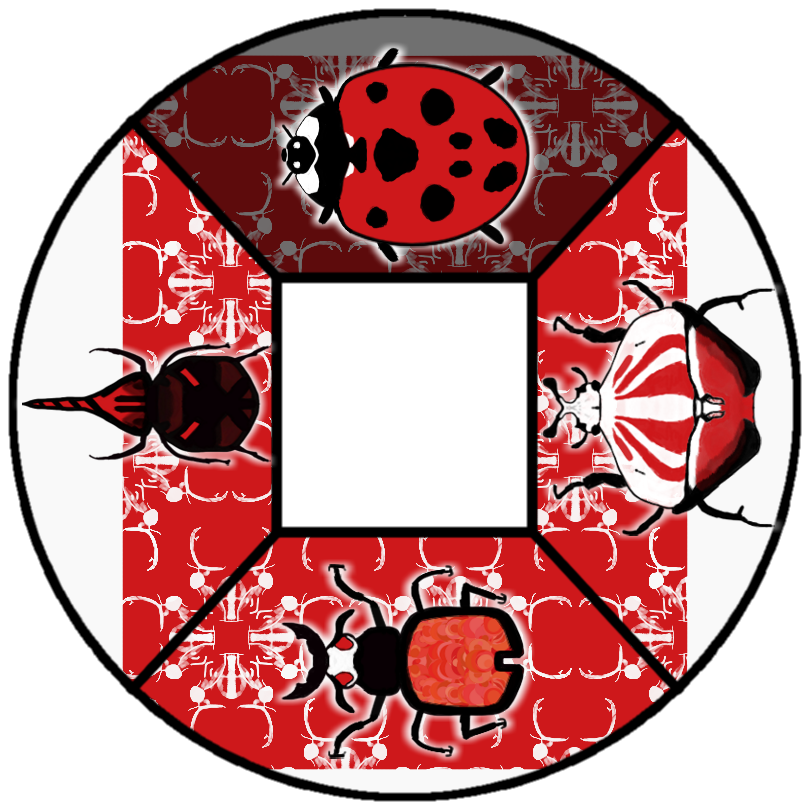

This past week I’ve taken a deep dive into the “Radial Selector” in Nectar of the Gods. It’s the central way the player selects which bugs to deploy. It’s something I’ve spent a great deal of time tweaking and collecting feedback on because it’s the driving component of the gameplay and “gamefeel”. If the player is going to use it every few seconds as they play the game it better look and feel dope. Here’s a look at the old radial selector:
The sections had a light red or blue background and then slowly filled with white as the player collected the necessary resources to deploy a unit. I had two main problems I wanted to solve:
- I wanted the filling sections to more clearly represent the resources the player was collecting in their red/blue straw. In order to do this I needed to change the white fill to red/blue.
- I wanted it to more clearly show the selected bug.
Here is the new radial selector!
Enhancements:
- Changed white fill against light red/blue background to red/blue fill against white background.
- Added white “shadow” behind each bug so they pop more against the samey background.
- Added a beetle “pattern” layered on top of the section fill so that it didn’t feel like such a sea of red. I created the pattern by shrinking the health beetle, shading its darkest portions white, shrinking it, and finally repeating it for a sleek beetle wallpaper! My goal is for each of the bug families (beetle brigade, the hive, spidey party) to have their own pattern for their respective wheels.
- Added a “shake” animation to the beetle that is currently selected, not able to see in the picture but in this example the ladybug would be doing a little dance in game.
ALAS
I still was not satisfied because the radial selector was still missing information for the player about the bug they are selecting. Like how much health the bug has and how much it costs. I was dreading solving this problem because it seemed like a really difficult one to solve. There was so little space and adding a bunch of info/numbers could make it look cluttered and ruin the sleek look I was going for. I ended up creating some mocks just to test the waters of what bug information could look like.
Mock 1
Mock 2
Mock 3
I hope you guys liked “Mock 3” because that was the one I was most happy with! Offsetting the numbers slightly for readability and only one heart / droplet symbol to denote all the numbers. I actually thought “Mock 1” looked pretty ballin but I knew deep in my heart it was completely unreadable in a real time scenario.
I’m super happy with how the radial selector is shaping up! I hope that it can provide a delightful foundation to Nectar of the Gods and I can continue to build off of it!